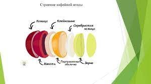

Строение кофейной ягоды
На картинке нарисованы и подписаны 6 частей ягоды. Каждый слой выполняет свою роль. Совместно они создают благоприятные условия для развития кофейного зерна.
- Внешняя оболочка ягоды называется кожицей. Она выполняет защитную роль от воздействия окружающей среды.
- Сразу за кожицей располагается мякоть. Еще ее называют пульпа. Она удерживает зерна на своем месте.
- По мере созревания ягоды мякоть выделяет гель, который называется клейковиной. Клейковина дает сладость ягоде. Клейковина облегчает процесс отделения зерна от мякоти.
- Пергаментная оболочка располагается за клейковиной. Она походит на скорлупу. Пергаментная оболочка защищает зерно от внешнего воздействия после отделения зерна от мякоти.
- Вслед за пергаментной оболочкой идет тонкая серебристая кожица. Ее пытаются сохранить при обработке зерна, так как она помогает сохранить вкус зерна. Она удаляется с зерна в процессе обжарки в виде шелухи.
- Завершает структуру кофейной ягоды зерно. В ягоды развивается одновременного два зерна. Иногда они срастаются в одно большое зерно. Такие зерна называют пиберри.
